Co-op Commander Guide: Han & Horner
Mercenary Leader and Dominion Admiral
Sections on this Page
Commander Summary
Han uses her relatively weak mercenaries with Horner's more powerful air units to create a powerful army that complements each other.

Level Unlocks
| Level/Icon | Name | Description |
|---|---|---|
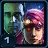 |
The Horners | When friendly units are killed, they drop resources for the commander of those units. Matt Horner starts with a Starport that can train elite aircraft. |
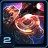 |
New Unit: Strike Fighter | Unlocks the Strike Fighter Platform and the Precision Strike ability. Launches a Strike Fighter to perform an airstrike against a targeted enemy or location. |
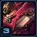 |
Assault Galleon & Raven Upgrade Cache |
Unlocks the following upgrades:
|
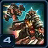 |
Merc Upgrade Cache |
Unlocks the following upgrades at the Engineering Bay:
|
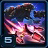 |
Call in the Fleet | Unlocks the ability to call in close planetary support from Horner's Armada. The Armada does massive damage to random enemy units in the target area. |
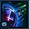 |
Impatience | Mira's Unit Build and Research times are reduced by 30%. |
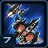 |
Dominion Starport Upgrade Cache |
Unlocks the following upgrades at the Starport Tech Lab:
|
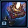 |
His and Hers Supply | Supply Depots are fitted with Dominion technology, increasing their health and supply by 100%. |
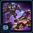 |
Hellion & Hellbat Upgrade Cache |
Unlocks the following upgrades at the Engineering Bay:
|
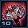 |
Space Station Reallocation | Unlocks the ability to use Space Station Reallocation. The Space Station deals 500 damage to Heroic targets it contacts, everything else is instantly destroyed. Assault drones will attack nearby targets. |
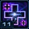 |
Endurance Training | Horner's units regenerate health while out of combat. |
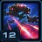 |
Advanced Weaponry | Call in the Fleet barrages enemy units with Lasers Batteries and fires Yamato Cannons that prefer high health targets. |
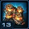 |
Fusion Core Upgrade Cache |
Unlocks the following upgrades at the Fusion Core:
|
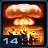 |
Have a Blast | Space Station Reallocation will detonate a nuclear device upon its destruction. |
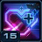 |
Significant Others |
Your units gain bonuses based on your army composition:
|
Highlighted rows denote large power spikes for the commander.
Achievements
The commander-specific achievements for Han & Horner are:
| Achievement | Name | Description |
|---|---|---|
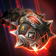 |
Did It Work? | Detonate 5,000 Magnetic Mines. |
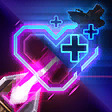 |
Holy Macromony | Command at least 80 supply worth of Han units and 40 supply worth of Horner units in a single mission on Hard difficulty. |
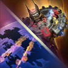 |
Till Death Do Them Part | Deal 800,000 combined damage with Call in the Fleet and Space Station Reallocation. |
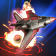 |
You're the Bomb | Deal 200,000 damage with Precision Strikes. |
Calldowns
The calldowns for Han & Horner, at level 15, with no mastery points added are:
| Calldown | Name | Description | Recommended Usage | Numbers |
|---|---|---|---|---|
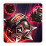 |
Deploy Mag Mines | Deploy 5 Mag Mines to the target location. Mag Mines are triggered by enemy motion and deal 50 damage area damage. |
|
|
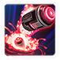 |
Precision Strike | Requirements: Must have a Strike Fighter Platform Sends a Strike Fighter to the target location where it deals 175 (+225 to non-Heroic structures) damage to enemy ground units in the target area. |
|
|
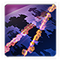 |
Call in the Fleet | Calls in close planetary support from Horner's Armada. The Armada does massive damage to random enemy units in the target area. |
|
|
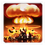 |
Space Station Reallocation | Space Station deals 500 damage to Heroic targets it contacts, everything else is instantly destroyed. Assault drones will attack nearby targets. Lasts for 10 seconds. On death, the station explodes with a nuclear blast, dealing 300 damage (+200 vs structures). |
|
|
Sub-Ascension Leveling
Difficulty: Moderate
During early stages of leveling, Han's units are very fragile. However, rushing up to Horner's units will leave you extremely vulnerable in the early game. Therefore, start off with some of Han's units (with Death Effect upgrades researched) and transition into Horner's units as quickly as reasonably possible. To increase effectiveness in the early levels, use Mag-Mines aggressively, by placing them behind your army, just before you push in. You can lure enemy units into the mines to deal damage.
While leveling through Mastery levels, allocate points into Power Set 3 in a 2:1 split for the Air Fleet to Mag Mine masteries.
Masteries
Below are the three Power Sets for Han & Horner with the recommended point allocations for each. Note that these are meant to serve a general, all-purpose build that is effective across all maps with no Prestiges selected. You are highly encourged to change these masteries to suit your playstyle and particular challenges you face (e.g. Weekly Mutations).
Power Set 1:
| Power | Value | Recommended Points to Add | Further Considerations |
|---|---|---|---|
| Strike Fighter Area of Effect | 1% per point 30% maximum |
0 | The Stronger Death Chance mastery works really well for unit-centric play, which is almost always how Han/Horner plays out, and is therefore recommended. |
| Stronger Death Chance | 2% per point 60% maximum |
30 |
The Strike Fighter Area of Effect mastery can be used if the player intends on cheesing various maps (such as Dead of Night). However, for all other playstyles, the Stronger Death Chance mastery is better.
Power Set 2:
| Power | Value | Recommended Points to Add | Further Considerations |
|---|---|---|---|
| Significant Other Bonuses | 0.5% per point 15% maximum |
30 | The Salvage mastery can be useful for players that lose a lot of units throughout the game. It also benefits allies, and allows them to take greater risks with their armies by reducing the cost of losses. |
| Double Salvage Chance | 2% per point 60% maximum |
0 |
The Double Salvage Chance is only useful if players lose a lot of units, which should not be the case for efficient play.
Power Set 3:
| Power | Value | Recommended Points to Add | Further Considerations |
|---|---|---|---|
| Air Fleet Travel Distance | 2% per point 60% maximum |
20 | It is generally recommended to split points between these two masteries. The exact split depends on how aggressively mines are used, or what the intent of the Air Fleet is (to completely clear, or just weaken). |
| Mag Mine Charges, Cooldown and Arming Time | -1% per point -30% maximum |
10 |
It is useful to have a higher Mag Mine Charge cap than is provided. Your playstyle will determine how many more you'd like to add.
Prestiges
Below are the prestiges for Han & Horner. Note that "Effective Level" is the level at which the prestige achieves it full effect.
| Level | Name | Description | Effective Level | Notes |
|---|---|---|---|---|
| 1 | Chaotic Power Couple |
|
1 | None |
| The increase in the arming speed of the Mag-mines makes this prestige very useful when trying to push into enemy bases, as enemy units usually do not have time to deal with the mines before they become invulnerable. Additionally since Horner's units aren't meant to be massed, but rather provide a strong backbone of support for Han's units, the increase in cost (albeit significant) is worth the benefits of this prestige. | ||||
Effectiveness Bonuses:
- Reaper Mine damage increased by 5
- Hellion Stim effects doubled
- Hellbat Fear duration increased by 3 seconds
- Widow Mine Sentinel Missile damage increased by 10
| Level | Name | Description | Effective Level | Notes |
|---|---|---|---|---|
| 2 | Wing Commanders |
|
1 | None |
| This prestige provides players with the opportunity to mass Horner's units. However, the capping of Galleons at 2 is a significant detriment to the player's earlygame performance, due to the difficulty in being able to rebuild a lost Han army. | ||||
| Level | Name | Description | Effective Level | Notes |
|---|---|---|---|---|
| 3 | Galactic Gunrunners |
|
13 | None |
| This prestige might appear to be extremely powerful, but the increase in the cost of the platforms signficantly slows down a player's ability to build them. Considering that the player will also want to push (since Strike Fighters aren't effective against most mission objectives), and that the platforms can only deal with ground targets, the prestige is not very effective in providing the player with a useful benefit. | ||||
For general play, Chaotic Power Couple offers a good tradeoff between its advantages and disadvantages by allowing the player to use Mag-mines a lot more aggressively and also improving the death effects of Han's units, while still keeping Horner's units viable.
Recommended Army Composition
The recommended army composition for Han/Horner is below. Note that this assumes no Prestige talent selected and recommended Mastery Allocations. This is a basic recommendation for your army framework. It is recommended to gain an understanding for each of the units in the Units section and further add tech units so that you are able to better handle the situations you face.
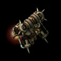
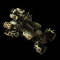
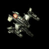
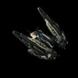
Reapers should be making up the bulk of your army with Hellions to provide the death effect stim buffs. Additionally, Ravens should also be added in to provide extra damage bonus to Reaper targets.
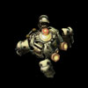
If you have access to enemy spawn compositions, you may use Widow Mines to spawn-camp those locations and further reduce damage taken by your army.
Combat Units
For more information on Han & Horner's unit stats, comparison between units and upgrade calculations, visit the Data Tables page.
Han & Horner's combat units are listed below:
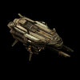
Assault Galleon
- Main production structure for Han's units.
- Only 5 can be present at the same time.
- Does very low damage.
- Outranges static defense which makes it effective at clearing contested expansions.
- Can heal out of Combat if Drone Hangars are installed.
Skills: None
Upgrades:
| Upgrade | Name | Effect |  / / |
Research Time |
|---|---|---|---|---|
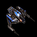 |
Install Drone Hangar | Retrofits the Assault Galleon with a Drone Hangar bay that automatically builds and deploys Assault drones. Assault Drones can attack ground and air units. |
150/200 | 60 seconds |
Han's Units:
Reaper
- Great structure DPS.
- Targets ground, but can be used to take out air units with the "Jet Pack Overdrive" upgrade.
- Use flying Reapers to kill strong splash Anti-Ground units (e.g. Reavers, Colossi, etc.).
- Extremely fragile unit.
Skills:
| Skill | Name | Description | Cooldown | Energy Cost |
|---|---|---|---|---|
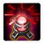 |
KD8 Charge | Explodes after a short delay, doing 10 area damage and knocking back nearby units. | 20 seconds | 0 |
Upgrades:
| Upgrade | Name | Effect | / |
Research Time |
|---|---|---|---|---|
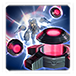 |
LE9 Cluster Charges | Reduces the cooldown of Reapers' KD8 Charge by 10 seconds. When Reapers are killed, they throw multiple grenades towards the killing unit. | 50/50 | 42 seconds |
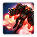 |
Jet Pack Overdrive | Increases the movement speed of Reapers by 50%, and grants them the ability to fly for 10 seconds. Reapers are able to attack air units while flying. | 100/100 | 63 seconds |
Widow Mine
- Useful defensive unit, especially with the "Executioner Missile" and the "Black Market Launchers" upgrade.
- Recommended to combine Widow Mines with Mag Mines for defense.
- Spread Widow Mines out so multiple mines they do not all get hit by single splash damage effects.
Skills: None
Upgrades:
| Upgrade | Name | Effect | / |
Research Time |
|---|---|---|---|---|
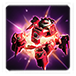 |
Executioner Missiles | Reduces the Widow Mine's Sentinel Missile cooldown by 20 seconds. When Widow Mines are killed, they launch 5 Sentinel Missiles at random nearby targets that deal 10 (+10 vs. shields) area damage. | 50/50 | 42 seconds |
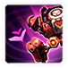 |
Black Market Launchers | Widow Mines range is increased by 50%, and can burrow and unburrow much faster (almost instantly). | 100/100 | 63 seconds |
Hellion
- Useful against armored targets.
- Small quantities recommended.
- Usually only made for its death effect.
Skills:
| Skill | Name | Description | Cooldown | Energy Cost |
|---|---|---|---|---|
 |
Tar Bombs | Launches a tar bomb that deals 20 damage to the target unit. Nearby enemies have their movement speed reduced by 75% and attack range reduced by 3 for 5 seconds. | 10 seconds | 0 |
Upgrades:
| Upgrade | Name | Effect | / |
Research Time |
|---|---|---|---|---|
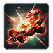 |
Aerosol Stim Emitters | Hellions and Hellbats transform 75% faster. When Hellions are killed, nearby allied units gain 25% movement and 15% attack speed for 15 seconds. | 50/50 | 42 seconds |
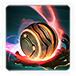 |
Tar Bombs | Hellions can launch a bomb that deals 20 damage to the target unit. Nearby enemies have their movement speed reduced by 75% and attack range reduced by 3 for 5 seconds. | 100/100 | 63 seconds |
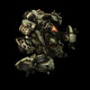
Hellbat
- Generally not made because Reapers fill their intended role well.
- You can add a few to your composition to take advantage of the fear effect to protect the rest of your army.
Skills: None
Upgrades:
| Upgrade | Name | Effect | / |
Research Time |
|---|---|---|---|---|
| Aerosol Stim Emitters | Hellions and Hellbats transform 75% faster. When Hellions are killed, nearby allied units gain 25% movement and 15% attack speed for 15 seconds. | 50/50 | 42 seconds | |
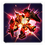 |
Wildfire Explosives | Hellbat movement speed is increased by 50%. When Hellbats are killed, they ignite the surrounding area. Enemies in the fire run around in fear for 3 seconds. | 50/50 | 42 seconds |
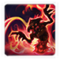 |
Immolation Fluid | Hellbat attacks cause enemies to burn for an additional 50 damage over 5 seconds. | 100/100 | 63 seconds |
Death Effects:
The below table lists out the death effects and the Improved Death Effects for each of Han's units:
| Unit | Upgrade Name | Death Effect | Improved Death Effect |
|---|---|---|---|
| Reaper | LE9 Cluster Charges | Throws 7 cluster charges towards the killing unit. | Throws 15 cluster charges towards the killing unit. |
| Hellion | Aerosol Stim Emitters | Nearby allied units gain 25% movement and 15% attack speed for 15 seconds. | Nearby allied units gain 50% movement and 30% attack speed for 15 seconds. |
| Hellbat | Wildfire Explosives | Ignite the surrounding area (radius 4). Enemies in the fire run around in fear for 3 seconds. | Ignite the surrounding area (radius 5.66). Enemies in the fire run around in fear for 3 seconds. |
| Widow Mine | Executioner Missiles | Launches 5 Sentinel Missiles at random nearby targets that deal 10 (+10 vs. shields) area damage. | Launches 10 Sentinel Missiles at random nearby targets that deal 10 (+10 vs. shields) area damage. |
Horner Units:
Asteria Wraith
- Very powerful with the "Trigger Override" upgrade which can increase its attack speed.
- Fragile, and draws a lot of aggro, so it is best when combined with other units.
Skills:
| Skill | Name | Description | Cooldown | Energy Cost |
|---|---|---|---|---|
 |
Tactical Jump | Warps to the target location. Aircraft is invulnerable while warping. | 60 seconds | 0 |
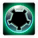 |
Cloak | Cloaks the unit, preventing enemy units from seeing or attacking it. A cloaked unit will only be revealed by detectors or effects. Drains 0.9 energy per second. |
0 seconds | 0 |
Upgrades:
| Upgrade | Name | Effect | / |
Research Time |
|---|---|---|---|---|
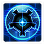 |
Unregistered Cloaking System | Allows Wraiths to remain permanently cloaked. | 100/100 | 63 seconds |
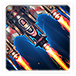 |
Trigger Override | Wraith attack speed increases by 10% with each attack, up to a maximum of 100%. Passive ability. |
100/100 | 63 seconds |
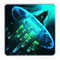 |
Tactical Jump | Wraiths, Vikings, and Ravens can use Tactical Jump, warping them to any visible location. | 150/150 | 63 seconds |
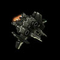
Deimos Viking
- Generally not recommended for sustained anti-air due to much better alternatives (Wraiths and Battlecruisers).
- Can provide very good amounts of burst damage with the W.I.L.D Missiles upgrade as long as they are not in sustained combat, or if the autocast on that ability is disabled.
- Very useful on infested maps with the "Shredder Rounds" which causes Assault Mode Viking attacks to pierce targets.
Skills:
| Skill | Name | Description | Cooldown | Energy Cost |
|---|---|---|---|---|
|
Tactical Jump | Warps to the target location. Aircraft is invulnerable while warping. | 60 seconds | 0 |
 |
W.I.L.D. Missiles | Launches 5 rockets at the target unit. Each rocket deals 25 (40 vs armored) damage. | 20 seconds | 0 |
Upgrades:
| Upgrade | Name | Effect | / |
Research Time |
|---|---|---|---|---|
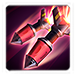 |
W.I.L.D. Missiles | Vikings in Fighter Mode can launch 5 rockets at an enemy. Each rocket deals 25 (40 vs armored) damage to the target unit. | 100/100 | 63 seconds |
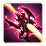 |
Shredder Rounds | Attacks from Vikings in Assault Mode pierce, dealing damage to enemy units behind the target. Viking transform time reduced by 75%. | 200/100 | 63 seconds |
| Tactical Jump | Wraiths, Vikings, and Ravens can use Tactical Jump, warping them to any visible location. | 150/150 | 63 seconds |
Theia Raven
- Analyze Weakness is a powerful ability that can massively increase damage taken by enemy units.
- Recommended to also get the "Multithreaded Sensors" which can increase potential targets of Analyze Weakness to 4.
- You should have 3-4 Ravens with your army.
Skills:
| Skill | Name | Description | Cooldown | Energy Cost |
|---|---|---|---|---|
|
Tactical Jump | Warps to the target location. Aircraft is invulnerable while warping. | 60 seconds | 0 |
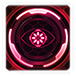 |
Analyze Weakness | All Melee and Ranged attacks against Analyzed units do 3 bonus damage. Effect lasts as long as the Raven remains locked onto the target. | 3 seconds | 0 |
Upgrades:
| Upgrade | Name | Effect | / |
Research Time |
|---|---|---|---|---|
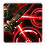 |
Multi-Threaded Sensors | Ravens can target up to 4 units with Target Lock. | 100/100 | 63 seconds |
| Tactical Jump | Wraiths, Vikings, and Ravens can use Tactical Jump, warping them to any visible location. | 150/150 | 63 seconds |
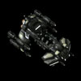
Sovereign Battlecruiser
- Useful for tanking damage.
- Overcharged Reactor is a must-get upgrade as it greatly increases damage output.
- Usually results in overkill, but you should still have a few in your army for high health targets.
Skills:
| Skill | Name | Description | Cooldown | Energy Cost |
|---|---|---|---|---|
|
Tactical Jump | Warps to the target location. Aircraft is invulnerable while warping. | 60 seconds | 0 |
Upgrades:
| Upgrade | Name | Effect | / |
Research Time |
|---|---|---|---|---|
| Overcharged Reactor | Battlecruiser weapons systems are upgraded to a powerful particle cannon that deals 200 damage per attack. | 150/150 | 63 seconds |
Build Order
Below is the standard economic build order for Han & Horner. For more information on how to read and construct your own build orders, please check the Build Order Theory page.
14 Supply Depot
17 Command Center
18 Assault Galleon
19 Refinery
20 Refinery
20 2x Hellions -> Rocks
Gameplay Guide
Playstyle Traps
A common trap for Han & Horner players is completely skip on Han's units in favor of Horner's more powerful air units. This can be quite an expensive mistake, as Horner's units, while strong, cannot take prolonged lengths of damage. This is particular true for the Asteria Wraiths, which naturally draw a lot of aggro. Given their high price, the best way to keep them safe is to add some of Han's units into the mix.
Additionally, these players will also find that they end up floating a lot of resources, particularly minerals as a result, because of the cooldown-based mechanic behind summoning Horner's units. Thus, it is better to use these spare resources to your advantage by making some of Han's units.
Playstyle Tips
- Place Mag Mines on enemy spawn points to destroy attack waves.
- Take advantage of the death effects of Han's units.
- Careful placement of Precision Strike targets can help you weaken enemy forces. On maps like Dead of Night you can sometimes hit three buildings with one strike.
- Build a Supply Depot in front of Mag Mines to draw enemy aggro and keep them still while the Mag Mines trigger.
- Contrary to the description, Space Station Reallocation does not instantly destroy every non-heroic unit/structure. It deals a total of 5,000 damage to everything it hits.
- Space Station Reallocation does reduced damage to some non-heroic structures. For example, Zenith Stones on Temple of the Past do not get instantly destroyed by the calldown, despite having no Heroic tag.